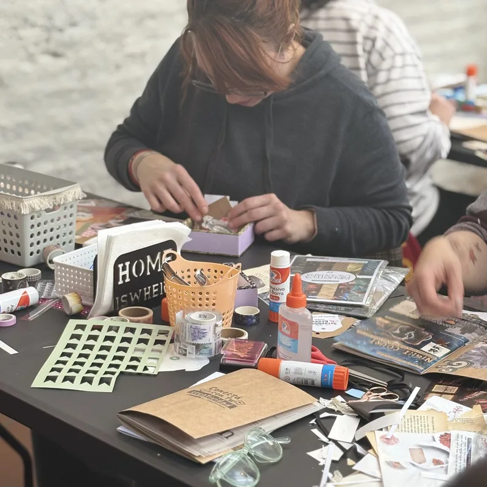
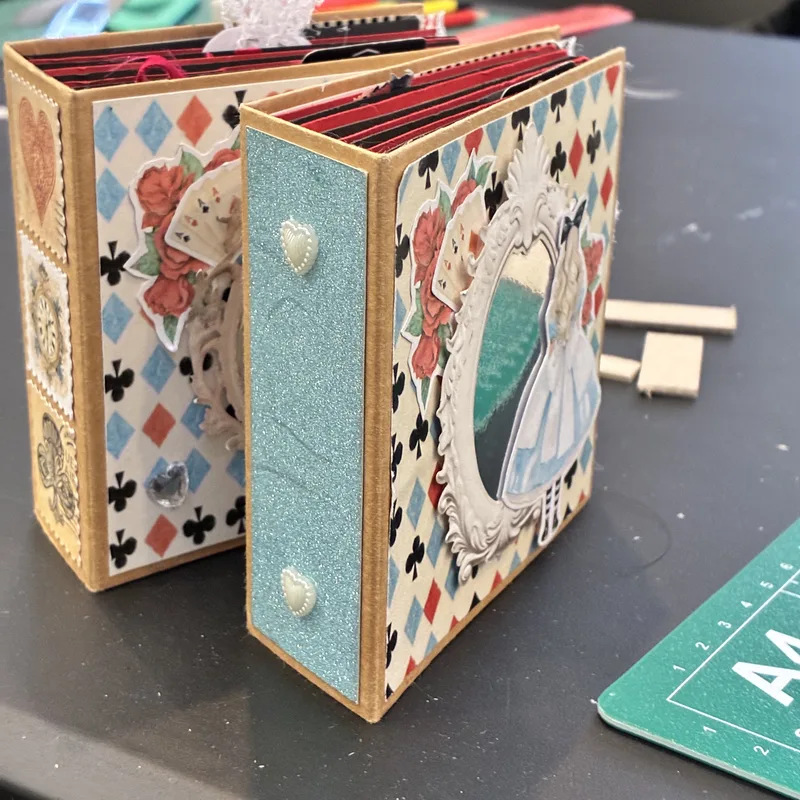
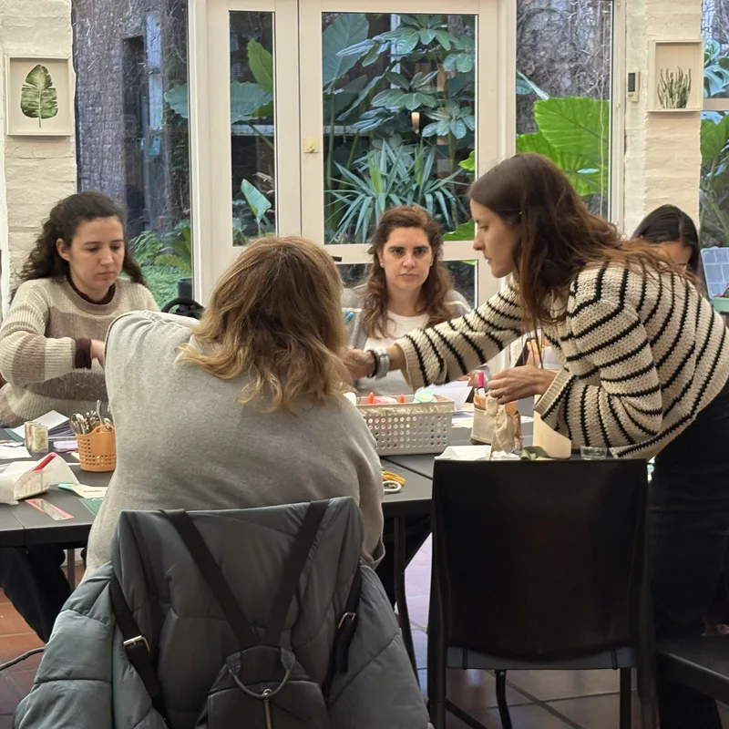
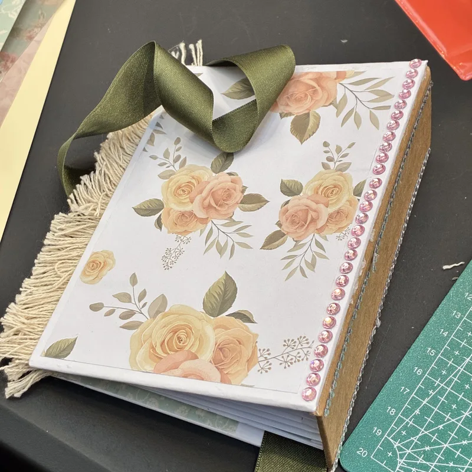
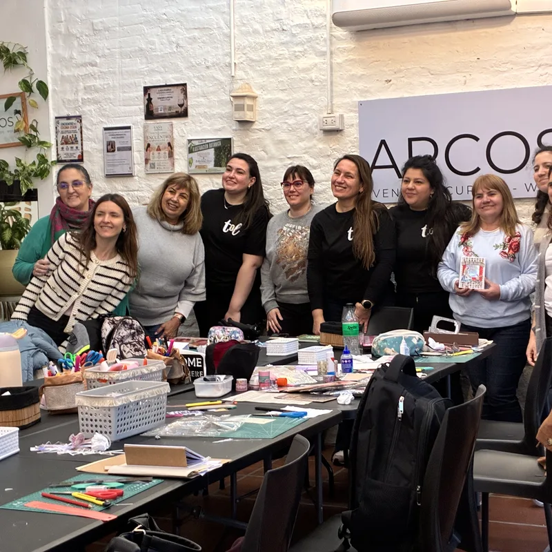

Talleres de scrapbook y encuadernación en Arcos V
Próxima edición

Una jornada para armar tu propia pieza de papel: cortar, pegar, componer y decidir cómo se ve. Se trabaja sobre una mesa larga llena de papeles, sellos, troqueles y materiales, y te llevás tu trabajo terminado.
- ✂️ No necesitás experiencia previa
- 📚 Todos los materiales están incluidos
- 🌿 Merienda incluida en el jardín
- 🎁 Te llevás tu pieza terminada
La fecha de octubre se confirma en los próximos días. Escribinos y te avisamos apenas esté cerrada.
Cómo son los talleres
Cada encuentro gira alrededor de una pieza distinta, así que se puede volver muchas veces sin repetir. Cambia el proyecto, cambian las técnicas y cambia lo que te llevás a casa.
No hace falta experiencia previa ni traer nada: los materiales están sobre la mesa y hay acompañamiento paso a paso durante toda la jornada. Son grupos medianos alrededor de una mesa larga, con espacio de sobra para desplegar papeles y trabajar cómoda.
Los encuentros incluyen una pausa con merienda, que en los días lindos se hace en el jardín.
Scrapbook
Composición sobre papel: álbumes, tarjetas y piezas decorativas armadas con papeles estampados, recortes, sellos, troqueles y capas. Es la puerta de entrada más fácil si nunca hiciste nada parecido.
Encuadernación artesanal
Armado de libretas y cuadernos desde cero: plegado de pliegos, costura del lomo y tapas decoradas a mano. Se trabaja con la estructura del objeto, no solo con la superficie.
Ediciones anteriores
Por Arcos V ya pasaron varias jornadas de scrapbook y encuadernación, con dos turnos por fecha y la mesa larga llena de gente trabajando toda la tarde.





¿Querés participar?
Las consultas e inscripciones las gestionan directamente las chicas de TOL Objetos de Diseño.
Consultar por WhatsApp